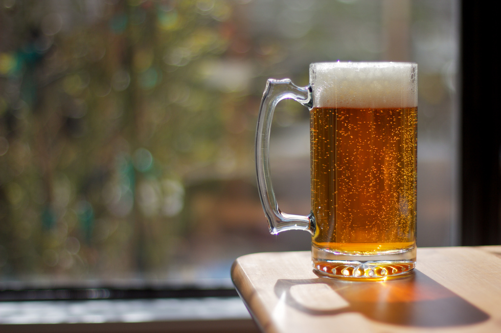
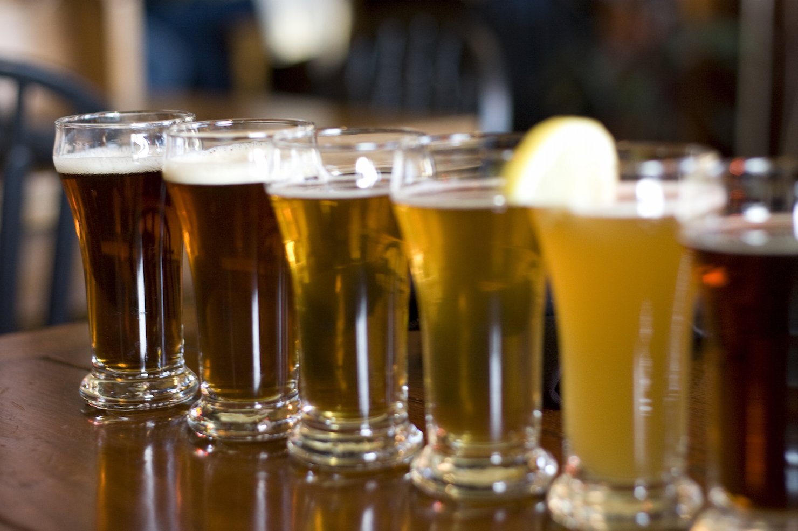

<!doctype html>

<html lang="pl">

  <head>
      <meta charset="utf-8">
      <meta http-equiv="X-UA-Compatible" content="IE=edge,chrome=1">
      <title>Beer Majster</title>
      <meta name="description" content="">
      <meta name="viewport" content="width=device-width, initial-scale=1">
      <link rel="apple-touch-icon" href="apple-touch-icon.png">
  </head>

  <body>

    <header>
        <a href="#" title="Beer Majster">
            
        </a>
        <nav>
            <ul>
                <li>
                    <a href="#welcome" title="Witaj!">Witaj!</a>
                </li>
                <li>
                    <a href="#articles" title="Artykuły">Artykuły</a>
                </li>
                <li>
                    <a href="#recipes" title="Receptury">Receptury</a>
                </li>
                <li>
                    <a href="#contact" title="Kontakt">Kontakt</a>
                </li>
            </ul>
        </nav>
    </header>

    <main>
        <section id="welcome">
            <figure>
                
            </figure>
            <article>
                <h1>Witaj w świecie receptur Andrzeja!</h1>
                <p>
                    Jesteś zainteresowany piwowarstwem? Próbowałeś pędzić swój
                    własny bimber, ale Ci się nie udało? A może po prostu
                    lubisz browary?
                </p>
                <p>
                    Jeżeli odpowiedź na którekolwiek z powyższych pytań brzmi “tak”,
                    to <strong>trafiłeś w dobre miejsce</strong>! Zakosztuj wybornych
                    receptur Andrzeja. Odkryj sekrety <strong>Córki młynarza</strong>,
                    zionąc <strong>Oddechem Sołtysa</strong> i jedząc
                    <strong>Zakazany Owoc</strong>.
                </p>
            </article>
        </section>

        <section id="articles">

            <h1>Artykuły</h1>
            <input type="search" placeholder="Szukaj..">

            <article>
                <header>
                    <p><time datetime="2016-05-08T16:31:24+02:00">08 / 05 / 2016</time></p>
                    <h2><a href="#" title="Cechy sensoryczne">Cechy sensoryczne</a></h2>
                </header>
                <p>
                    Mauris molestie bibendum magna. Donec tincidunt luctus ante, consequat dictum nisi sollicitudin nec. Nam vitae ex quis eros aliquam posuere. Vivamus egestas velit ac quam egestas fringilla. Quisque pretium ullamcorper purus, ornare imperdiet.
                </p>
            </article>

            <article>
                <a href="#" title="Zrób to sam">
                    
                </a>
                <header>
                    <p><time datetime="2016-03-22T16:31:24+02:00">22 / 03 / 2016</time></p>
                    <h2><a href="#" title="Zrób to sam">Zrób to sam</a></h2>
                </header>
                <p>
                  Suspendisse nunc eros, dictum sit amet
                  sagittis nec, gravida vel purus. Maecenas erat augue,
                  eleifend non blandit vitae, egestas ut tortor. Mauris
                  dignissim erat ligula.
                </p>
            </article>

            <article>
                <a href="#" title="Surowce piwowarskie">
                    
                </a>
                <header>
                    <p><time datetime="2016-01-18T16:31:24+02:00">18 / 01 / 2016</time></p>
                    <h2><a href="#" title="Surowce piwowarskie">Surowce piwowarskie</a></h2>
                </header>
                <p>
                    Nam rutrum turpis quis mi vulputate, in suscipit metus
                    congue. Nam ut tortor a nunc condimentum volutpat id
                    quis lacus. Donec et dui metus. Maecenas posuere
                    volutpat mattis. In tellus.
                </p>
            </article>

            <article>
                <header>
                    <p><time datetime="2015-10-14T16:31:24+02:00">14 / 10 / 2015</time></p>
                    <h2><a href="#" title="Sprzęt piwowara domowego">Sprzęt piwowara domowego</a></h2>
                </header>
                <p>
                    Fusce velit nisi, dignissim tincidunt odio condimentum,
                    gravida ullamcorper ligula. Aliquam varius urna arcu,
                    auctor mollis nisi vehicula ut. Curabitur fringilla
                    neque sit amet tempus tincidunt. Vestibulum scelerisque
                    nibh ante, sit amet tincidunt.
                </p>
            </article>

        </section>

        <section id="recipes">

            <h1>Receptury</h1>

            <nav id="beer-tabs">
                <ul>
                    <li><a href="#beer-tabs-1" title="Zawartość ekstraktu">Zawartość ekstraktu</a></li>
                    <li><a href="#beer-tabs-2" title="Zacieranie">Zacieranie</a></li>
                    <li><a href="#beer-tabs-3" title="Fermentacja">Fermentacja</a></li>
                    <li><a href="#beer-tabs-4" title="Brzeczka nastawna w litrach">Brzeczka nastawna w litrach</a></li>
                    <li><input type="search" placeholder="Szukaj.."></li>
                </ul>

                <div id="beer-tabs-1">
                    <p>
                        <input id="option11" type="checkbox" name="checkbox" value="ekstrakt-12"><label for="option11">12</label>
                    </p>
                    <p>
                        <input id="option12" type="checkbox" name="checkbox" value="ekstrakt-13"><label for="option12">13</label>
                    </p>
                    <p>
                        <input id="option13" type="checkbox" name="checkbox" value="ekstrakt-15"><label for="option13">15</label>
                    </p>
                </div>
                <div id="beer-tabs-2">
                    <p>
                        <input id="option21" type="checkbox" name="checkbox" value="zacieranie-Infuzyjne"><label for="option21">Infuzyjne</label>
                    </p>
                    <p>
                        <input id="option22" type="checkbox" name="checkbox" value="zacieranie-Dekokcyjne"><label for="option22">Dekokcyjne</label>
                    </p>
                </div>
            </nav>

            <div id="beers-div">

                <article>
                    <a href="#" title="Córka młynarza">
                        
                    </a>
                    <header>
                        <p>
                            <time datetime="2016-08-11T16:31:24+02:00">11 / 08 / 2016</time>
                        </p>
                        <h2><a href="#" title="Córka młynarza">Córka młynarza</a></h2>
                    </header>
                    <p>Piwo z charakterem. Żadna córka młynarza Ci się nie oprze! No chyba, że młynarz nakryje Was w swoim młynie - wtedy uciekaj.</p>
                    <p><strong>Informacje o recepturze:</strong></p>
                    <ul>
                        <li>Zacieranie: {{zacieranie}}</li>
                        <li>Fermentacja: {{fermentacja}}</li>
                        <li>Zawartość ekstraktu (Blg): {{ekstrakt}}</li>
                        <li>Brzeczka nastawna w litrach: {{brzeczka}}</li>
                    </ul>
                </article>

                <article>
                    <a href="#" title="Bycza moc">
                        
                    </a>
                    <header>
                        <p>
                            <time datetime="2016-08-11T16:31:24+02:00">11 / 08 / 2016</time>
                        </p>
                        <h2><a href="#" title="Bycza moc">Bycza moc</a></h2>
                    </header>
                    <p>Piwo zrobione z miłością, zawiera \"dodatek\" od byków z najlepszych hodowli. Doda Ci siły i wigoru!</p>
                    <p><strong>Informacje o recepturze:</strong></p>
                    <ul>
                        <li>Zacieranie: {{zacieranie}}</li>
                        <li>Fermentacja: {{fermentacja}}</li>
                        <li>Zawartość ekstraktu (Blg): {{ekstrakt}}</li>
                        <li>Brzeczka nastawna w litrach: {{brzeczka}}</li>
                    </ul>
                </article>

            </div>

        </section>

        <section id="contact">

            <h1>Kontakt</h1>

                <p>
                    <strong>Andrzej Kowalski</strong><br><br> 48-500 Stare Juchy<br> ul. Starego Piwosza 15<br><br> tel. 349 473 962
                </p>
                <form id="contact-form" action="">
                    <fieldset>
                        <input placeholder="E-mail" tabindex="1" required id="cf-email">
                    </fieldset>
                    <fieldset>
                        <textarea placeholder="Wiadomość" tabindex="2" required id="cf-content"></textarea>
                    </fieldset>
                    <fieldset>
                        <button name="submit" type="submit" id="cf-submit" data-submit="...Wysyłam">WYŚLIJ</button>
                        <p id="submission-info"></p>
                    </fieldset>
                </form>

        </section>

    </main>

    <footer>

    </footer>

  </body>

</html>
